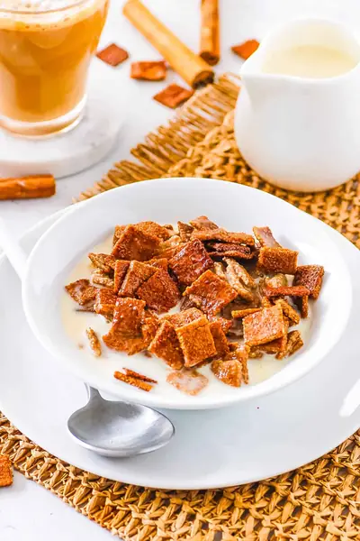

Homemade Cinnamon Toast Crunch

Ingredients
- 2 tbsp aquafaba (can also use water or maple syrup)
- ½ cup coconut sugar
- 1 tsp cinnamon (ground)
- 1 cup rolled oats (or oat flour)
- 1 cup almond flour
- ⅓ cup coconut sugar
- 2 tsp cinnamon
- ¼ tsp salt
- 3 tbsp applesauce
- 1 tsp vanilla extract
- ½ - 1 tbsp water
Steps
- Add the rolled oats to a high speed food processor and blend until finely processed.
- Next, add all remaining cereal ingredients to the bowl of a food processor. Start with ½ tbsp of water and adjust if needed.
- Blend to form a dough that’s easily rollable. If the dough is too dry add a little more water.
- Place the dough in the fridge for 30 mins to chill.
- While the dough is chilling, prepare the cinnamon sugar by mixing the coconut sugar and ground cinnamon in a small bowl.
- Preheat the oven to 350 degrees F / 180 C.
- Divide the dough in half. Roll one half of the dough in between 2 sheets of parchment paper until very thin. The thinner the dough is rolled the crispier it will be when cooked.
- Remove the top sheet of parchment paper, trim the edges of dough forming a rectangle.
- Lightly brush with aquafaba and then sprinkle with ¼ of the cinnamon sugar, gently press into the dough.
- Place the parchment paper back on top of the dough and flip the dough over. Remove the top layer of paper, brush with aquafaba and sprinkle with cinnamon sugar.
- Using a knife or pizza cutter, cut the dough into ¼ inch squares.
- Carefully transfer to a baking sheet and bake for 6-8 minutes.
- Remove and allow to cool before separating the squares.
- Repeat with remaining dough.
- Serve with your favorite chilled milk.
- Store the cereal in an airtight container in the fridge for up to 3 days.
Recipe by Anjali Shah · The Picky Eater, from The Picky Eater. Saved here for personal use; the original has the full notes, tips and photos. Open original